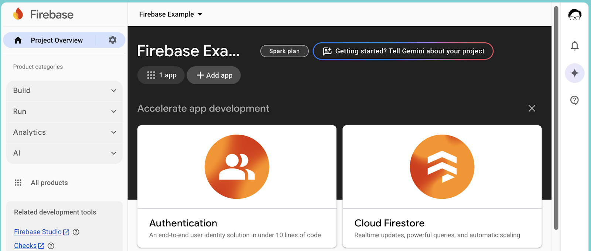
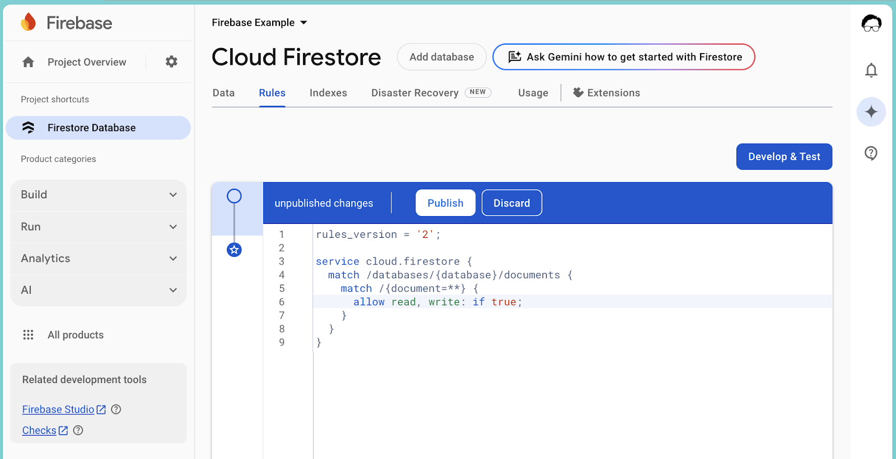
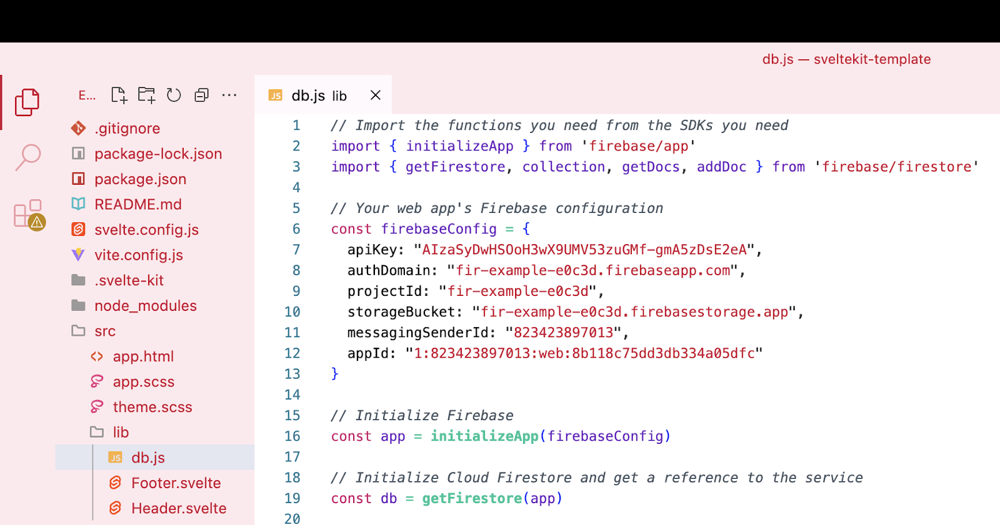
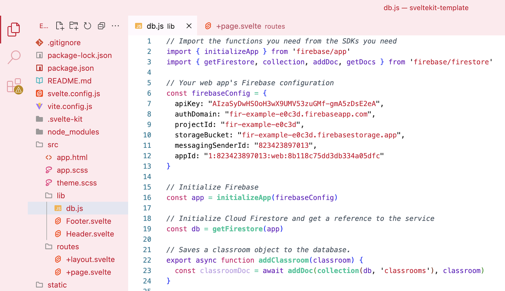
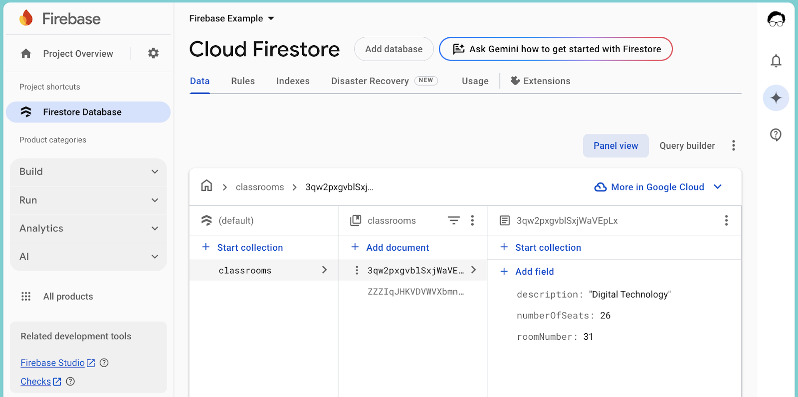

What you'll build
- A database to store objects from your existing web app.
What you'll learn
- What a database is and does.
- How to create and set up a Firebase database.
- How to connect your web app to the database.
What you'll need
- Knowledge of HTML, CSS, JavaScript, and Svelte.
- A web app with some data that needs to be stored.
Firebase includes a feature called Cloud Firestore, which is their database. A database holds data for your web app and will send it to your app when you need it. Keeping the data separate helps keep everything manageable, flexible, and robust.
- Click on the Cloud Firestore card (or click on the Build menu dropdown and select Firestore Database).
- Click Create database to create the database for this project.

- Leave the settings on the defaults and click Next until you're done.
Databases often store information that you want to control access to, like people's email addresses or even passwords. Firebase lets you do that with rules.
When you first create your database, by default no one can access anything. This is to make sure you don't accidentally share something you don't want to.
Your database doesn't store anything sensitive yet, so we'll change the rules so that anyone can read or write information to the collections.
- Go to the Rules tab of your database.
- Change the
allowline so that it saystrueinstead offalse. - Click Publish to save your changes.

In the previous guide you added the connection to your Firebase project, but now we need to add the actual Firestore database.
- Import the Firestore functions by replacing the TODO line with this import line:
import { getFirestore } from 'firebase/firestore'
- Create your database connection variable by adding this line after you've initialized Firebase:
const db = getFirestore(app)
This constant variable represents the database for the rest of your SvelteKit app.

Adding data to your database is going to require two parts:
- a function to send that information to the database
- an interface to collect the information and send it to the function
The function will live in your db.js file and save whatever classroom comes to it into the database. It'll save it into the classrooms collection.
You can read all about this in Firebase's excellent documentation.
- Import the
collectionandaddDocfunctions fromfirestore. You can put them in the same set of curly brackets that hasgetFirestore. - Add a function to the bottom of your db.js file called addClassroom as per the example here. The explanation of how it works is below the image.
db.js
// Saves a person object to the database.
export async function addClassroom(classroom) {
const personDoc = await addDoc(collection(db, 'classrooms'), classroom)
}

The interface will be on the main page of your app for now.
- Import the
addClassroomfunction you just created. - Create a
newClassroomobject with properties forroomNumber,description, andnumberOfSeats - Create a
labelfor each of the object's properties and inside eachlabelbind aninputto the property. - Create a
buttonthat sends thenewClassroomobject to theaddClassroomfunction.
+page.svelte
<script>
import Header from '$lib/Header.svelte'
import Footer from '$lib/Footer.svelte'
import { addClassroom } from '$lib/db.js'
let newClassroom = {
roomNumber: '',
description: '',
numberOfSeats: '',
}
</script>
<Header />
<main class="content section">
<label class="label">
Room number: <input type="number" bind:value={newClassroom.roomNumber} />
</label>
<label class="label">
Description: <input bind:value={newClassroom.description} />
</label>
<label class="label">
Number of seats: <input type="number" bind:value={newClassroom.numberOfSeats} />
</label>
<button class="button" on:click={() => { addClassroom(newClassroom) }}>
Save
</button>
</main>
<Footer />
Getting data from your database is also going to require two parts:
- a function to get the information from the database
- an interface to display the information
The function will live in your db.js file and get all the classrooms from the classrooms collection in your database.
- Add
getDocsto yourimportfromfirestore. - Create a new function called
getClassrooms, but also addexportandasyncto the start.
db.js
// Gets all the classrooms from the database.
export async function getClassrooms() {
}- Add the code from the Firestore documentation for getting all the documents from a collection.
- Create an empty array called
classrooms.
db.js
// Gets all the classrooms from the database.
export async function getClassrooms() {
let classroomDocs = await getDocs(collection(db, 'classrooms'))
let classrooms = []
}- Use a loop to iterate over the documents and put their data into the array as an object.
db.js
// Gets all the classrooms from the database.
export async function getClassrooms() {
let classroomDocs = await getDocs(collection(db, 'classrooms'))
let classrooms = []
classroomDocs.forEach((classroomDoc) => {
classrooms = [...classrooms, classroomDoc.data()]
})
}- Use a return statement to send the
classroomsarray back to wherever the function was called from.
db.js
// Gets all the classrooms from the database.
export async function getClassrooms() {
let classroomDocs = await getDocs(collection(db, 'classrooms'))
let classrooms = []
classroomDocs.forEach((classroomDoc) => {
classrooms = [...classrooms, classroomDoc.data()]
})
return classrooms
}- Import your new function on the home page.
- Create a new variable to store the classrooms, and use your new function to get them.
routes/+page.svelte
<script>
import Header from '$lib/Header.svelte'
import Footer from '$lib/Footer.svelte'
import { addClassroom, getClassrooms } from '$lib/db.js'
let classrooms = getClassrooms()
let newClassroom = {
roomNumber: '',
description: '',
numberOfSeats: '',
}
</script>- Run the
npm run devcommand in the terminal and open the page in your browser. Make sure you haven't got any errors on the page or in the console.
We have an array of classroom objects, so let's start by putting all their details on the front page.
- At the top of your
main, use the{#await ...}block to get the page to show that it's loading while we wait for the data from the database to arrive.
+page.svelte
{#await classrooms}
<p>Loading...</p>
{:then classrooms}
{/await}- Once the
classroomarray arrives, we can use an{#each ...}block to iterate over it.
+page.svelte
{#await classrooms}
<p>Loading...</p>
{:then classrooms}
{#each classrooms as classroom}
{/each}
{/await}- And output the details of the
personobject in any way we want.
+page.svelte
{#await classrooms}
<p>Loading...</p>
{:then classrooms}
{#each classrooms as classroom}
<p>{classroom.roomNumber} {classroom.description} {classroom.numberOfSeats}</p>
{/each}
{/await}Well done! You've successfully got the basics of Firebase Firestore by connecting your application to a powerful cloud database, storing your first pieces of information as objects, and bringing all that data back to display on your page. These are foundational skills that open up heaps of possibilities for the applications you're building.
While fetching an entire collection is useful, often you'll want to work with more precision. Imagine needing to:
- Instead of getting all classrooms, what if you needed to retrieve just one specific classroom by its room number?
- You might need to change a classroom's seats, or change its description.
- Remove outdated entries: Sometimes information is no longer needed, and you'll want to delete specific documents from your collection.
Beyond these individual operations, you can also start asking more intelligent questions of your database. Think about sorting your retrieved classrooms alphabetically. Firestore allows you to do these things as part of the function in your code, or you can write the JavaScript to do it yourself.
It's important to think about what functionality your project needs. Do you need to edit data? Search for specific items? The official Firebase documentation is an excellent resource, packed with examples. Even if you're not sure how to do it now, as long as you know what you need to do then you'll be able to figure out how to do it by looking at examples, reading the documentation, and helping each other.